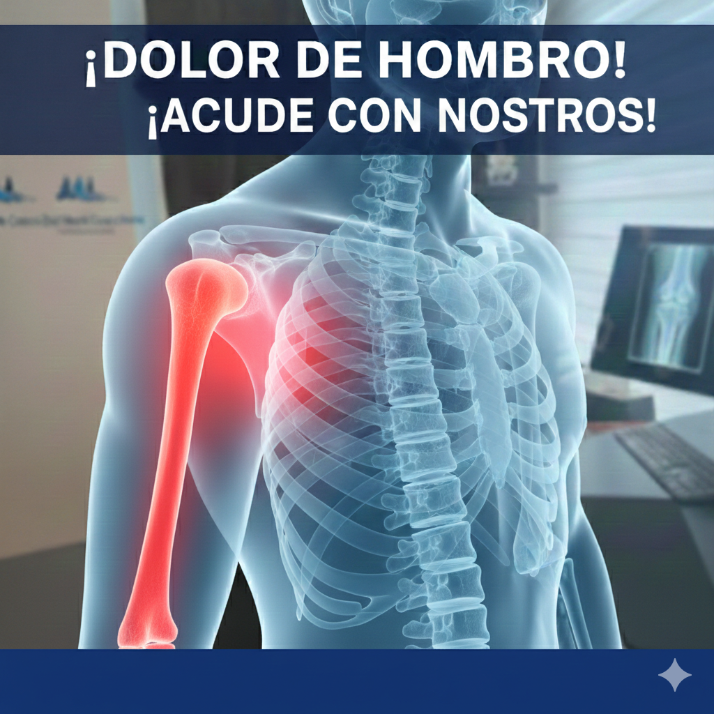
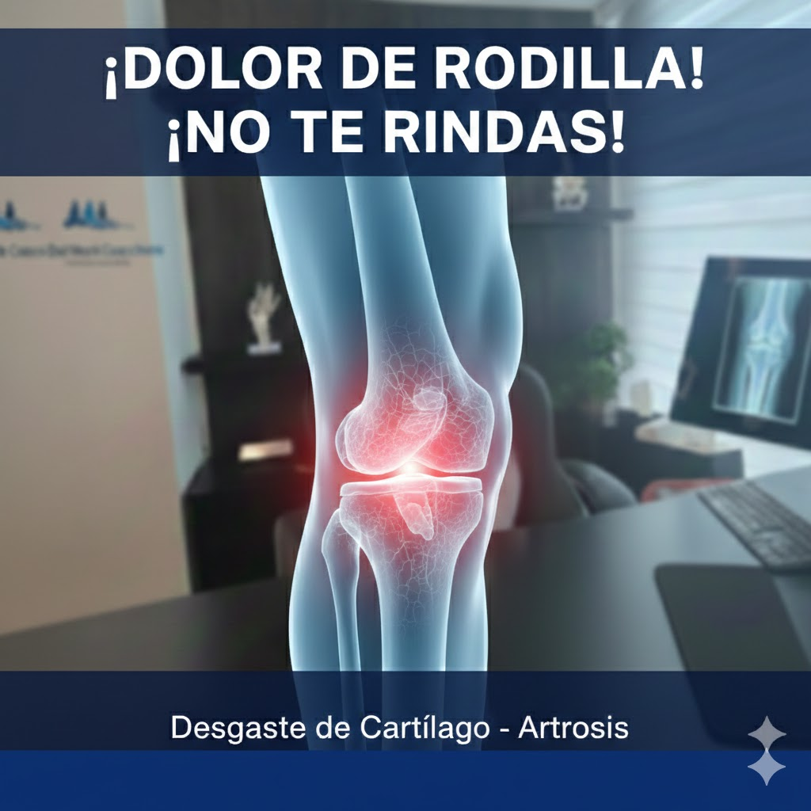

Servicios Especializados

Lesiones de Hombro
Manguito rotador, luxaciones y artroscopia.

Desgaste de Rodilla
Meniscos, ligamento cruzado y artrosis.

Deformidades en los Pies
Corrección de Hallux Valgus.
Manguito rotador, luxaciones y artroscopia.
Meniscos, ligamento cruzado y artrosis.
Corrección de Hallux Valgus.
Evaluación completa y diagnóstico preciso.
Terapia física, infiltraciones y medicamentos.
Técnicas mínimamente invasivas.
Interpretación de estudios radiológicos.
Control continuo después de cirugías.
Programas personalizados de recuperación.
Dirección:
Hospital MAC La Viga
Calzada La Viga #1174 El Triunfo
Ciudad de México, CDMX
Teléfono:
55 3410 8562
Horario:
Lunes a Viernes: 9:00 - 18:00
Sábado: 9:00 - 14:00
Domingo: Cerrado
Médico Cirujano y Partero – IPN
Traumatólogo y Ortopedista – UNAM
Alta Especialidad en Cirugía Artroscópica – UNAM